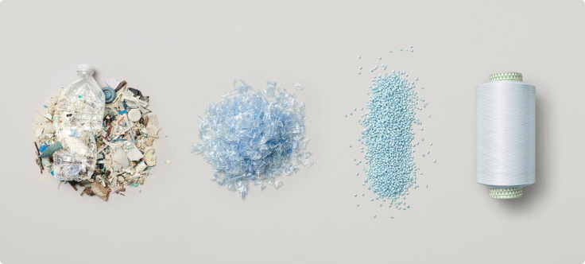

Story
Parley
Product
Event

11개
의 플라스틱 병으로 만드는 기적
업사이클링 신발 한켤레를 만드는 데
약 11개의 플리스틱 병이 재활용되어,
이 병들이 잠재적으로 바다에 유입 되는 것을 방지합니다.
지속 가능한 미래를 향한 약속
아디다스는 2017년부터 2020년까지
Parley Ocean Plastic으로 수백만 켤레의 신발을 제작하여
환경 인식을 높이고 지속가능한 변화를 이끌었습니다.
앞으로도 재활용과 업사이클링을 확대하여
환경보호와 지속가능한 미래를 실현할 것입니다.